Click anywhere (or press Esc) to close
ECON 2316 • Microeconomic Theory • Chapter 14
Whenever your best move depends on what someone else does, you are in a game. Two pricing algorithms that never meet can raise rents in lockstep — no memo, no cartel. This chapter builds the machinery: players, strategies, payoffs, and the one profile nobody wants to walk away from.
Dr. Richeng Piao
Department of Economics
Northeastern University
By the end of this chapter, you will be able to…
1
Define a normal-form game; find pure-strategy Nash equilibria with dominance and iterated elimination.
2
Tell a cooperation problem (prisoner’s dilemma) from a coordination problem; explain why players mix when no pure equilibrium exists.
3
Solve sequential games by backward induction; find the subgame-perfect equilibrium.
4
Derive the grim-trigger discount-factor threshold for repeated cooperation. (central result)
5
Apply it to entry deterrence, OPEC+, and algorithmic collusion.
The toolkit — this chapter
Where it is used — oligopoly
One idea runs through it: a Nash equilibrium is a set of choices nobody wants to change alone (Nash 1950; Nobel 1994). Every oligopoly model is a game solved this way.
A US B-29 caught radioactive isotopes (Ce-141, Y-91) drifting over the Pacific — their half-lives dated a blast. The Soviets had the bomb.
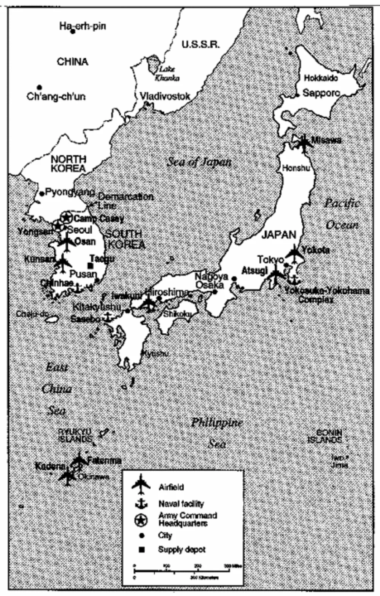
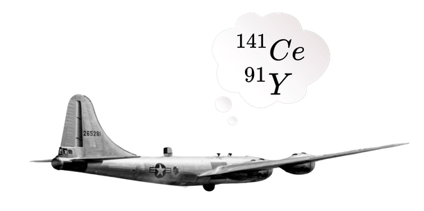
| Isotope | Half-life |
|---|---|
| Ce-141 | ~32.5 days |
| Y-91 | ~58.5 days |
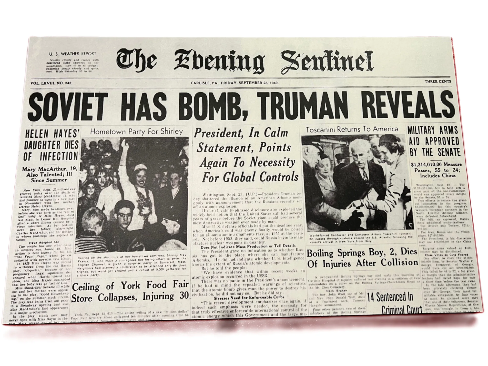
Both superpowers now have the bomb. Some US leaders push for a preemptive strike.
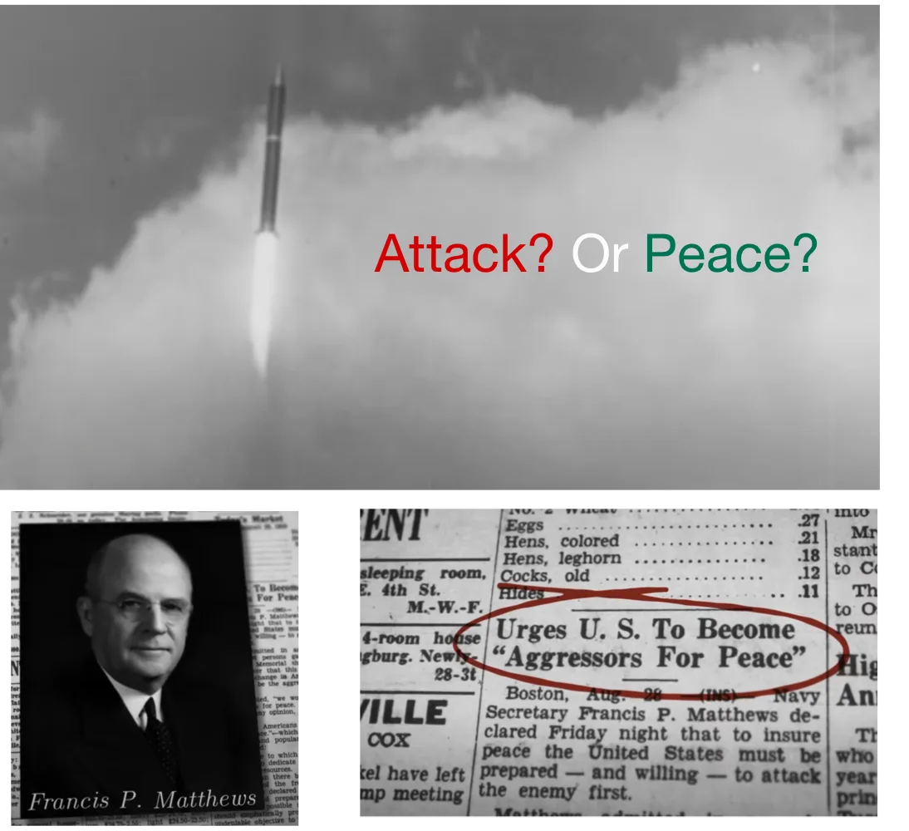
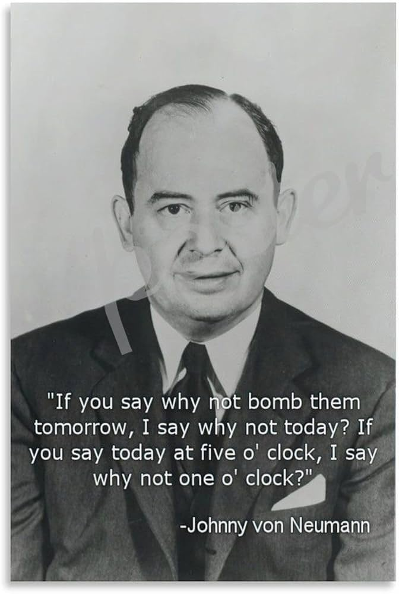
“We would become the first aggressors for peace.”
Navy Secretary Francis P. Matthews, August 1950
John von Neumann, the mathematician who founded game theory and worked on the bomb: “Why not bomb them today?” (attributed)
Strike first, or wait? Neither side struck. Both kept building, until each had tens of thousands of warheads.
Two stations across a four-lane road sell identical unleaded. For decades they held an uneasy truce near \$3.30/gal.
Then a price-comparison app (call it “FuelTrack”; a made-up example) showed every price in one tap. Within six weeks both undercut daily; margins fell to cost plus card fees.
Same owners, costs and market. Only the speed of information changed, and the equilibrium flipped.
\$3.30
old truce price
\$3.27
undercut, post-app
6 wk
to flip the equilibrium
1 tap
what changed
A game = players (the two stations), strategies (prices), payoffs (daily revenue, depending on both prices). The app changed the game, so the equilibrium moved.
The big idea
Is it a game? Who plays, what they can do, what they assume
The study of strategic decision-making — when multiple players each act in their own best interest and their outcomes depend on the actions of others.
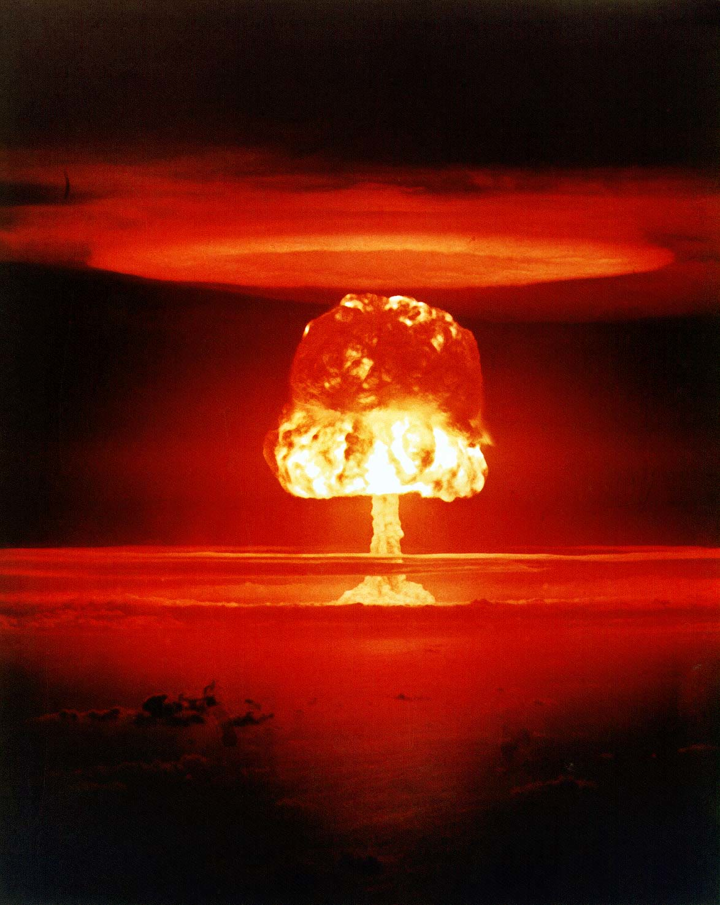
The arms race: build more? Depends on what the other side builds.
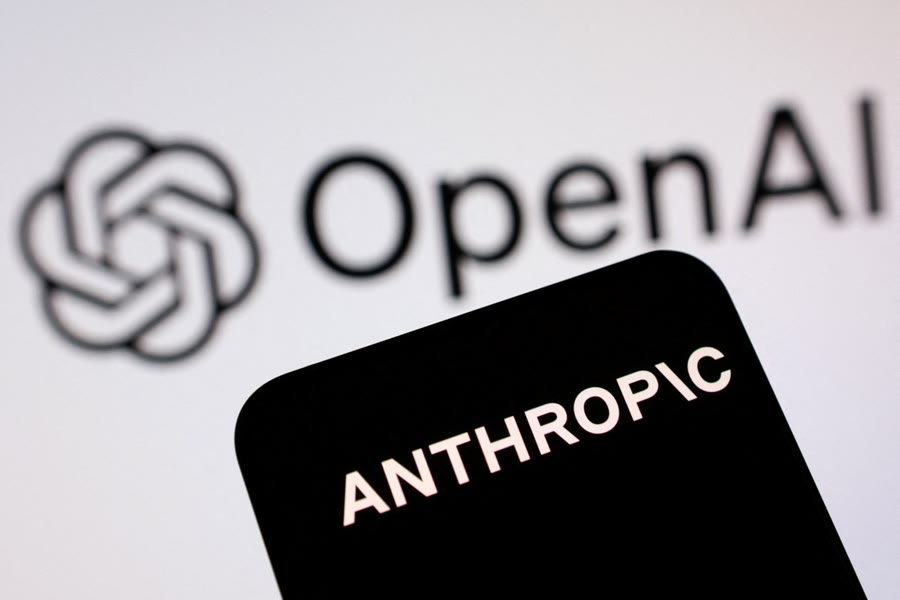
The AI race: each extra dollar of compute adds less. Keep investing, or stop? Depends on the rival’s spending.
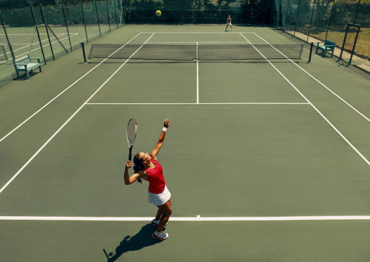
A tennis serve: aim where the returner won’t guess.
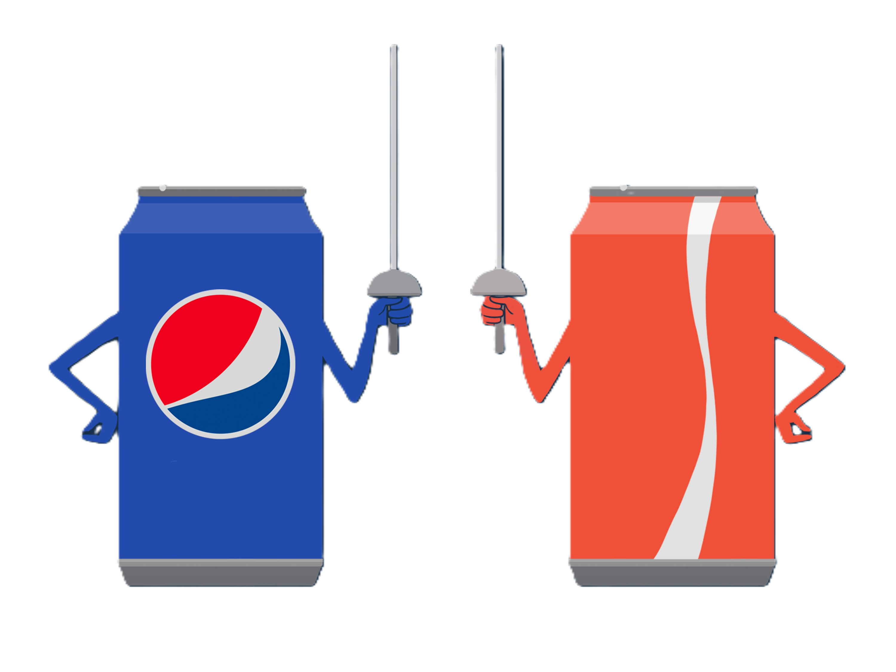
Coke vs Pepsi: each price set with one eye on the other.
Same logic in all four: your payoff depends on the other player’s choice, so your best move must anticipate it.
Rock
Scissors
Paper
Every throw beats one throw and loses to another.
They throw Rock → you throw Paper
They throw Paper → you throw Scissors
They throw Scissors → you throw Rock
No throw is best on its own. Your best move depends on what you expect them to do: a strategic decision.
Perfect Competition Ch 10
Monopoly Ch 11
Price Taker — too small to matter
Price Maker — no rivals to watch
Neither extreme is strategic: the perfect competitor can’t move the price, and the monopolist has no one to react to. Only oligopoly (Ch 13) — a few firms watching each other — is a game.
The Simpsons, Season 4, Episode 19 (clip). Click to play.
Bart: “Good old Rock. Nothing beats that.” He never looks at what Lisa does.
Lisa: Bart’s throw is fixed, so there is nothing to guess. Paper, every time.
Not a strategic interaction. Bart never reacts to Lisa, so she has nothing to anticipate: a one-player problem, like a price taker facing a fixed price.
One-player problem
Only your own choice moves your payoff.
A consumer choosing a basket; a monopolist choosing output.
Game
The other side’s choice moves your payoff too, and you know it.
Two superpowers; Coke and Pepsi; kicker and keeper.
What we assume about the players
Rational: each picks the strategy with the best payoff, given what it expects the others to do.
Everyone knows the game: the players, their strategies and the payoffs.
Modeling frameworks
Before the equilibria: the two ways economics models behavior — and where strategy breaks the mold
The first two are decision theory: both ignore anyone reacting to you, for opposite reasons.
Optimization
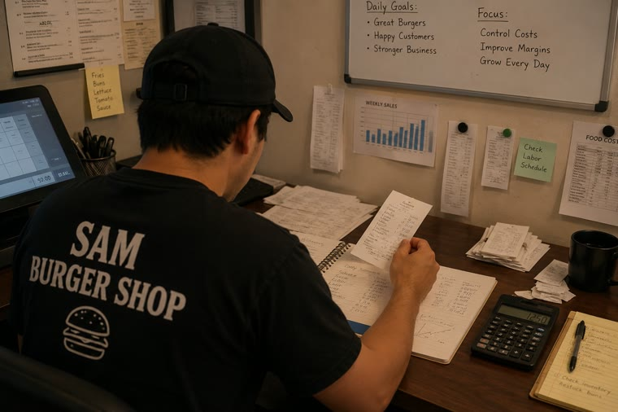
Maximize your objective within your constraints; ignore other agents.
Consumers max utility; firms max profit
Outcome
Optimum — you have no better alternative
Equilibrium
So many agents that none moves the outcome, so nobody reacts to you.
Price-takers in perfect competition (Ch 10)
Outcome
Equilibrium — nobody has a better alternative
Game theory — this chapter
A few players, each best-responding to the others.
Outcome
Nash equilibrium — no better move given everyone else’s
Oligopoly is neither: a few firms, each watching the others. Game theory fills that gap.
The classic game
The Cold-War problem that became game theory’s most famous game
1944 — Theory of Games and Economic Behavior: von Neumann & Morgenstern launch game theory (2-player zero-sum games, the minimax method).
1950 — Nash Equilibrium: John Nash proves every finite game has a set of strategies where no player can gain by changing alone.
1950 — Prisoner’s Dilemma: Merrill Flood & Melvin Dresher at RAND formulate it — two rational players, each in self-interest, end up worse off than if they’d cooperated.
So play it. A banker offers you and a stranger a game. Each secretly picks Cooperate or Defect.
Both cooperate: 3 coins each · You defect alone: you 5, they 0 · Both defect: 1 each. What do you pick?
The arms race
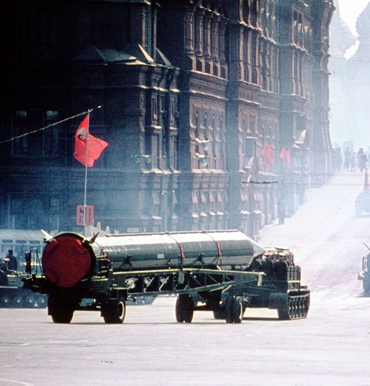
A penalty kick
PLAYERS
\(\{1, \ldots, n\}\)
STRATEGIES
\(S_i\)
PAYOFFS
\(u_i(s_1,\ldots,s_n)\)
Choices are simultaneous: nobody sees the other’s choice first.
Simultaneous
Both choose without seeing the other’s choice.
Solve with a payoff matrix (§14.1–14.3).
Coke and Pepsi set this summer’s prices before either sees the other’s.
Sequential
One moves first; the next sees it, then moves.
Solve with a game tree (§14.4).
An airline adds flights on a route; a rival sees it, then decides whether to enter.
The First Game
A live game: end with fewer marbles than your partner, and you’re eliminated
HOW IT WORKS
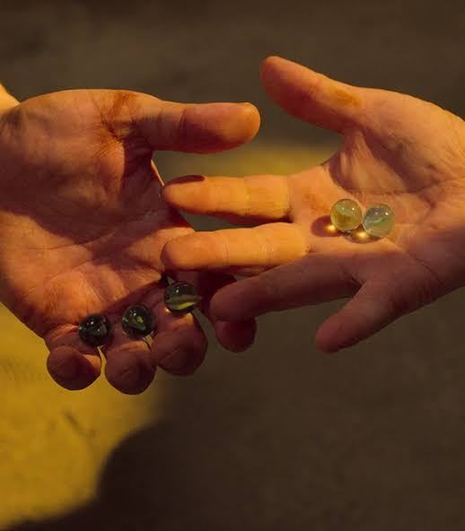
A marble round with a random partner. Each of you secretly picks Trust 🤝 or Betray 🔪. Nobody learns whose pick they got.
| Partner trusts 🤝 | Partner betrays 🔪 | |
|---|---|---|
| You trust 🤝 | 3 you 3 partner | 0 you 5 partner |
| You betray 🔪 | 5 you 0 partner | 1 you 1 partner |
As in the show: end with fewer marbles than your partner and you are eliminated. Equal marbles: both survive.
YOUR PICK
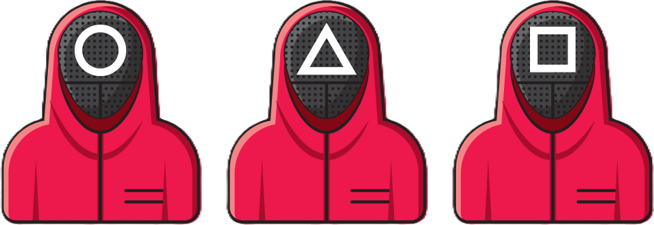
Type your initials, then tap one ↓
Each click pairs two anonymous picks and shows their marbles. 🔪 = betray, 🤝 = trust. Fewer marbles than your partner: eliminated.
§14.1
Players, strategies, payoffs — and the simplest prediction: never play a strictly dominated strategy
Outcome matrix: a table that records every possible result of the game — the marbles for the row player and the column player at each combination of choices. Far easier to absorb than four sentences.
| My Pair | |||
| Betray | Trust | ||
| Me | Betray | 1 | 5 |
| Trust | 0 | 3 | |
My marbles
| My Pair | |||
| Betray | Trust | ||
| Me | Betray | 1 | 0 |
| Trust | 5 | 3 | |
My pair’s marbles
Superimpose the two tables — my marbles first, my pair’s marbles second:
| My Pair | |||
| Betray | Trust | ||
| Me | Betray | 1,1 | 5,0 |
| Trust | 0,5 | 3,3 | |
1st number = row player (my marbles) • 2nd number = column player (my pair’s marbles)
• To be a useful model, we need a solution concept to predict the outcome — otherwise, what’s the point?
• Game theory looks for the equilibrium — a no-regrets solution.
• The trick: put yourself in your pair’s shoes. Is there a strategy you always want to play?
If my pair plays Betray…
| My Pair | |||
| Betray | Trust | ||
| Me | Betray | 1,1 | 5,0 |
| Trust | 0,5 | 3,3 | |
Payoffs in marbles: (me, my pair).
→ I prefer Betray (1 > 0)
If my pair plays Trust…
| My Pair | |||
| Betray | Trust | ||
| Me | Betray | 1,1 | 5,0 |
| Trust | 0,5 | 3,3 | |
→ I prefer Betray (5 > 3)
Dominant strategy: your best choice regardless of what the other player does. If both have one, that outcome is a Nash equilibrium.
Compare my two rows — is one always better? (payoffs in marbles)
If I play Betray (top row)…
| My Pair | |||
| Betray | Trust | ||
| Me | Betray | 1,1 | 5,0 |
| Trust | 0,5 | 3,3 | |
I get 1 or 5
If I play Trust (bottom row)…
| My Pair | |||
| Betray | Trust | ||
| Me | Betray | 1,1 | 5,0 |
| Trust | 0,5 | 3,3 | |
I get 0 or 3
1 > 0 and 5 > 3 → Betray is dominant. My pair reasons the same, so both play Betray: a Prisoner’s Dilemma. Why not both play Trust?
§14.2
Mutual best responses — the equilibrium concept that works even beyond dominance
Best response. Hold the others’ choices \(s_{-i}\) fixed; \(i\) picks the payoff-maximizing reply.
\(BR_i(s_{-i}) \;=\; \arg\max_{s_i \in S_i} u_i(s_i, s_{-i})\)
A correspondence: ties allow several.
Nash equilibrium: everyone best-responds at once; nobody gains by deviating alone.
\(s_i^{\ast} \in BR_i(s_{-i}^{\ast}) \iff u_i(s_i^{\ast}, s_{-i}^{\ast}) \geq u_i(s_i, s_{-i}^{\ast})\ \ \forall\, s_i,\ \forall\, i\)
You found one: (Betray, Betray). Dominance = best against every \(s_{-i}\); Nash needs it only against \(s_{-i}^{\ast}\), so Nash finds equilibria where dominance finds none.
| My Pair | |||
| Betray | Trust | ||
| Me | Betray | 1,1 | 5,0 |
| Trust | 0,5 | 3,3 | |
Cell = (Me, My Pair), in marbles.
Circled = the mutual best response.
(Betray, Betray) = (1, 1) is stable, yet (Trust, Trust) = (3, 3) is better for both. Nash means nobody improves alone, not that everybody does best: the Prisoner’s Dilemma.
A US weather plane over the North Pacific picks up fresh fission isotopes. The US has tested nothing that year.
THE EVIDENCE
Cerium-141 and yttrium-91 decay in one to two months, so the blast was recent. The Soviets have the bomb.
THE TEMPTATION
Strike first while still ahead? In 1950 the Navy Secretary calls for “aggressors for peace.”
THE MODEL
1950, at RAND: Flood and Dresher write down a two-player game with this shape. It becomes the prisoner’s dilemma.
A banker offers you and a stranger a game. Each secretly picks Cooperate or Defect.
Both cooperate: 3 coins each · You defect alone: you 5, they 0 · Both defect: 1 each. What do you pick?
Problem. Uber and Lyft each set fares in a city: Hold fares (cooperate) or Cut fares (defect). Payoffs = weekly profit in the city, $ millions (stylized), Uber first. Find each firm’s dominant strategy and the equilibrium.
| Lyft | |||
| Hold | Cut | ||
| Uber | Hold | 3,3 | 0,5 |
| Cut | 5,0 | 1,1 | |
green = equilibrium · amber = better for both
Set up & solve
Dominant = best against every rival choice. Check Uber column by column.
vs Lyft Hold: Cut \(5 > 3\). vs Lyft Cut: Cut \(1 > 0\). → Cut dominates.
Same for Lyft → equilibrium (Cut, Cut) = (1, 1).
Check
(Hold, Hold) = (3, 3) pays both more than (1, 1).
Yet each gains \(5-3 = 2\) by cutting alone, so (Hold, Hold) is not Nash.
So the equilibrium (1, 1) is worse for both than (3, 3): it is Pareto-dominated.
It happened. In January 2016 Uber cut fares in about 100 US and Canadian cities and Lyft matched. In 2019 Uber lost $8.5 billion and Lyft $2.6 billion. §14.5 asks when repetition fixes it.
Coke and Pepsi sell in Boston: demand \(P = 18 - 0.2Q\), \(Q\) in thousands of cases a week, \(MC = \$6\) a case. Each ships Restrict (15 thousand cases) or Flood (20). Cell \(=\) (Coke, Pepsi) profit, $ thousands a week.
| Pepsi | |||
| Restrict 15 | Flood 20 | ||
| Coke | Restrict 15 | 90,90 | 75,100 |
| Flood 20 | 100,75 | 80,80 | |
Restrict: \(Q = 30\), \(P = \$12\) · one floods: \(Q = 35\), \(P = \$11\) · both flood: \(Q = 40\), \(P = \$10\)
Coke: Flood wins in both columns: \(100 > 90\) and \(80 > 75\). Dominant.
Pepsi: the same in both rows, by symmetry. Dominant.
Nash: (Flood, Flood) = $80k each, below the $90k from both restricting. A prisoner’s dilemma in output: the same \((5,3,1,0)\) ranking, in dollars.
Uber and Lyft could both hold fares and earn (3, 3) instead of (1, 1). A friend says: “just agree to both hold.”
What’s the problem?
60 sec to vote then ↓ for the answer
(Hold, Hold) = (3, 3) is not stable. Each firm earns 5 by cutting while the other holds, so both are tempted, and the deal collapses to (Cut, Cut) = (1, 1).
C is true but not the reason: even with no law, cutting pays. §14.5 shows how repetition can rescue the deal.
Recall from Principles — 1116 §13.3
Nash equilibrium: each player best-responds; nobody wants to deviate alone (John Nash, Nobel 1994).
New in this course: best response as a formal correspondence, and iterated elimination to search for equilibria (G 31).
Heads Up 14.1 — two traps
Trap 1: “Nash = best joint outcome.” No: in the PD, \((D,D)\) is the unique NE and Pareto-dominated by \((C,C)\). Squid Game ends at 1 marble each, not 3.
Trap 2: “A game has one equilibrium.” No: Battle of the Sexes has two pure NE. Picking one takes a focal point (Schelling 1960): custom, talk, or a salient payoff.
Why Nash still predicts: by watching rivals and adjusting, players converge on Nash. It is self-enforcing: stable, not efficient.
The Squid Game numbers again. Cell = (me, my pair), in marbles.
| My Pair | |||
| Betray | Trust | ||
| Me | Betray | 1,1 | 5,0 |
| Trust | 0,5 | 3,3 | |
Nash equilibrium — stable
At (Betray, Betray) = (1, 1), switching alone pays 0 < 1. Nobody moves.
Pareto improvement
Moving to (Trust, Trust) = (3, 3) makes both better off and nobody worse off.
But not individually stable
At (3, 3), betraying alone pays 5 > 3, so each wants to switch.
Nash asks: can anyone gain alone? Pareto asks: can someone gain without hurting anyone? In a prisoner’s dilemma the answers differ.
Each side does best alone by the selfish move; together they end up worse off.
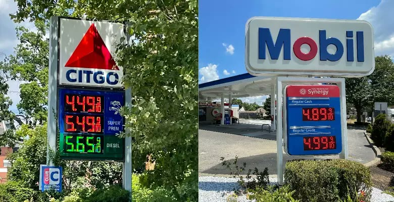
Price wars
Stations across the road undercut each other; margins vanish.
Fare wars
Airlines match every sale on a route; fares fall for both.
Ad wars
Both spend to hold share; the ads cancel out.
Overfishing
Each boat catches more; the stock collapses (Ch 17).
The way out always changes the game: binding contracts, regulation, or repeated play (§14.5), anything that makes cooperating safe.
HOW IT WORKS
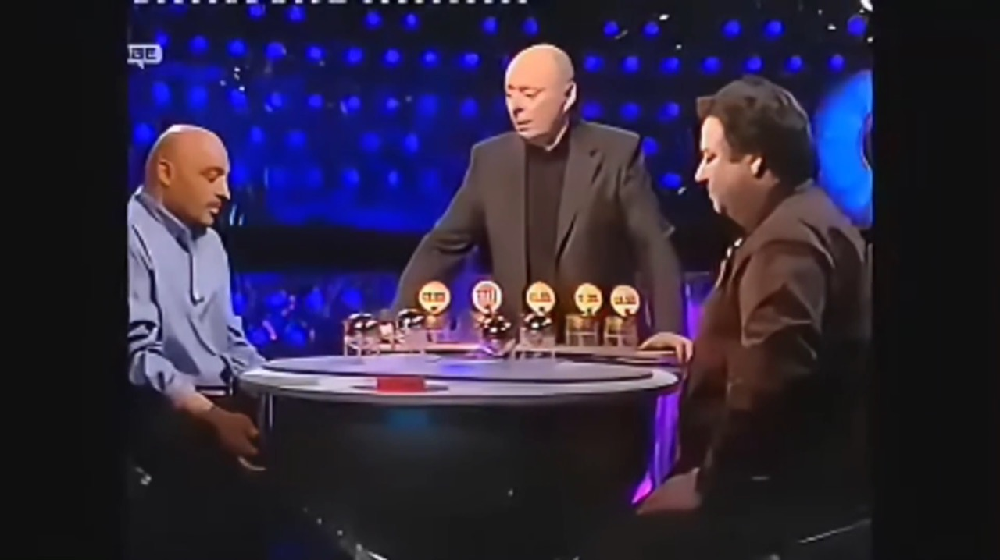
A jackpot of 10 raffle tickets. You and a random partner each secretly pick Split 🤝 or Steal 🔪.
| Partner splits 🤝 | Partner steals 🔪 | |
|---|---|---|
| You split 🤝 | 5 you 5 partner | 0 you 10 partner |
| You steal 🔪 | 10 you 0 partner | 0 you 0 partner |
The real episode: Golden Balls, “Split or Steal” (YouTube) — watch it after class.
YOUR PICK
📢 HALF OF YOU ARE ANNOUNCERS. THEIR PARTNER HEARS:
“I’m going to STEAL, no matter what you pick. After class, I’ll share my tickets with you.”
Type your initials to see your role ↓
Each click pairs two anonymous picks and shows their tickets. 🤝 = split, 🔪 = steal.
The real show, on our numbers. Nick moves first by talking. Cell = (Nick, Ibrahim), in tickets.
| Ibrahim | |||
| Steal | Split | ||
| Nick | Steal | 0,0 | 10,0 |
| Split | 0,10 | 5,5 | |
Without talk: three Nash cells counting ties; (Steal, Steal) = 0 each is where people land.
Step 1 — Nick removes an option
“I’m going to steal, no matter what.” His Split row is gone (if Ibrahim believes him).
Step 2 — Ibrahim’s choice changes
Against Steal, Ibrahim gets 0 either way. Add “I’ll share after,” and only Split can pay. Ibrahim splits.
Step 3 — what happened
Nick split too: (Split, Split) = (5, 5) in our table. On the show: £6,800 each of £13,600. Giving up an option made both better off.
Strict — Uber vs Lyft ($ millions a week)
| Rival | |||
| Hold | Cut | ||
| You | Cut | 5,0 | 1,1 |
| Hold | 3,3 | 0,5 | |
Cut wins in EVERY column: strictly dominant
Weak — Split or Steal (tickets)
| Rival | |||
| Split | Steal | ||
| You | Steal | 10,0 | 0,0 |
| Split | 5,5 | 0,10 | |
Steal wins once and TIES once: only weakly dominant
Strict: better in every column. Weak: never worse, better somewhere. Deleting strictly dominated strategies never loses a Nash equilibrium; weak deletion can. That tie is the room Nick used.
A strategy is strictly dominated if another strategy beats it in every column. Nobody rational plays it.
1
Delete
Cross out every strategy that loses everywhere.
2
Shrink
The game is smaller now, and everyone knows it.
3
Repeat
In the smaller game, something new may lose everywhere. Go again.
If one cell survives, it is the only Nash equilibrium. Try it next.
Answer: C, Starbucks Large. Against every Dunkin’ size, Starbucks earns more with Medium: 6 > 2, 2 > 1, 5 > 0. Nothing else is beaten everywhere yet.
| Starbucks | ||||
| Small | Medium | Large | ||
| Dunkin’ | Small | 3,5 | 2,6 | 3,2 |
| Medium | 4,4 | 4,2 | 2,1 | |
| Large | 2,3 | 1,5 | 4,0 | |
Crossed out = strictly dominated in that round.
Round 1 — Starbucks
Large loses to Medium in every row → delete Large.
Round 2 — Dunkin’
Now Medium beats Small (4 > 3, 4 > 2) and Large (4 > 2, 4 > 1) → delete both.
Round 3 — Starbucks
Facing Dunkin’ Medium: Small 4 > Medium 2 → delete Medium.
Survivor
(Medium, Small) = (4, 4): the unique Nash equilibrium.
Dunkin’ and Starbucks open on the same corner. Each picks a store size. Monthly profit, $ thousands: (Dunkin’, Starbucks).
| Starbucks | ||||
| Small | Medium | Large | ||
| Dunkin’ | Small | 3,5 | 2,6 | 3,2 |
| Medium | 4,4 | 4,2 | 2,1 | |
| Large | 2,3 | 1,5 | 4,0 | |
Which strategy is beaten in every column (or row)?
60 sec to vote then ↓ for the answer
Starbucks’ profit ($ thousands a month): Medium beats Large in every row, 6 > 2, 2 > 1, 5 > 0. Then keep going:
| Starbucks | ||||
| Small | Medium | Large | ||
| Dunkin’ | Small | 3,5 | 2,6 | 3,2 |
| Medium | 4,4 | 4,2 | 2,1 | |
| Large | 2,3 | 1,5 | 4,0 | |
1 · Starbucks: Large loses to Medium in every row → out.
2 · Dunkin’: Medium now beats Small and Large → both out.
3 · Starbucks: facing Medium, Small 4 > Medium 2 → Medium out.
Survivor (Medium, Small) = (4, 4): the only Nash equilibrium.
HOW IT WORKS
Pick a whole number from 1 to 100. I average every guess in the room and multiply by ⅔. Closest to that target wins $5.
Target \(= \tfrac{2}{3} \times\) class average
Example: three guesses, 40, 70, 100. Average \(= 70\). Target \(= \tfrac{2}{3}\times 70 \approx 46.7\). Closest: 40 wins (6.7 away; 70 is 23.3 away).
No talking; your guess is hidden. Everyone else is trying to win too, so think about what they will guess. Sixty seconds.
YOUR GUESS
Shaded bands mark guesses that cannot win — we prove that next.
The same elimination loop, now with 100 strategies.
Average ≤ 100, so target ≤ \(\tfrac{2}{3}(100) = \mathbf{66.7}\). Any guess above 66.7 is strictly dominated. delete (66.7, 100]
Everyone knows that → average ≤ 66.7 → target ≤ \(\tfrac{2}{3}(66.7) = \mathbf{44.4}\). delete (44.4, 66.7]
If everyone knows that… ceiling \(= \mathbf{29.6}\). delete (29.6, 44.4]
19.8 → 13.2 → 8.8 → 5.9 → 3.9 → … each round × \(\tfrac{2}{3}\).
Only 1 survives: \(\mathbf{(1,1,\ldots,1)}\) is the unique Nash equilibrium.
Check in dollars: all bid 1 → target \(0.67\) → tie → $5 splits, \(\approx\$0.20\) each. Bid 2 alone → $0. Nobody gains by moving alone.
Why didn’t you all guess 1? Rung \(k\) needs “everyone knows that everyone knows…” \(k\) times: common knowledge of rationality, behind every equilibrium here. Doubting that others climb all the way is rational.
SAME RULES, ONE CHANGE
Whole number 1–100; closest to ⅔ of the class average wins $5.
Now everyone has seen Round 1 and the ladder. Payoffs did not move; beliefs did.
Leadership: if someone the room trusts says “everyone guess 1,” and you expect others to follow, 1 becomes your best reply. Advice moves beliefs.
Why 1: if everyone guesses 1, the target is 0.67 and everyone ties. Nobody can do better by moving alone: the Nash equilibrium.
YOUR ROUND 2 GUESS
Round 1 — before the ladder
Round 2 — after the ladder
Promises alone don’t move a Nash equilibrium. Only a change to payoffs, information, or the number of rounds does.
1. Commitment, not conversation
A commitment costly to reverse. Price-match guarantees make undercutting pointless, so nobody starts.
Nick’s “I will Steal” was the same move.
2. Change the payoffs — reward the first defector
DOJ Corporate Leniency Policy: full immunity to the first cartel member who comes forward, nothing to the second. Defecting becomes dominant.
3. Play it again — and be able to see cheating
Repetition disciplines only players who can detect defection — so cartels invest in monitoring.
OPEC+ returns as grim trigger in §14.5.
4. An outside rule that binds everyone at once
The 1971 cigarette ad ban imposed the cooperative cell (two slides on). The Paris Agreement has no enforcement, so free-riding survives.
A rule without teeth leaves the equilibrium untouched.
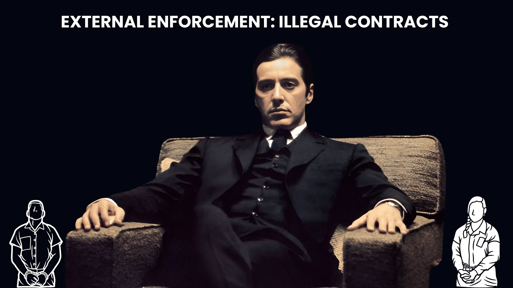
No court enforces a price-fixing deal, or a promise between two suspects. Years in prison: lower is better.
The deal alone
| B: Confess | B: Silent | |
|---|---|---|
| A: Confess | 2, 2 | 0, 3 |
| A: Silent | 3, 0 | 1, 1 |
Confess is dominant → (2, 2). The promise is worthless.
… plus a cost \(c\) on talking
| B: Confess | B: Silent | |
|---|---|---|
| A: Confess | 2+c, 2+c | c, 3 |
| A: Silent | 3, c | 1, 1 |
c = the cost of talking: your family’s safety, the gang’s revenge.
Silence is dominant once \(c > 1\) year: against a partner who confesses, \(3 < 2 + c\); against a silent one, \(1 < c\). Only the payoff to talking changed. That is omertà; antitrust leniency pulls the same lever the other way.
The Public Health Cigarette Smoking Act banned TV and radio cigarette ads from January 1971. The tobacco firms barely fought it.
| B: Don’t | B: Advertise | |
|---|---|---|
| A: Don’t | 50, 50 | 25, 60 |
| A: Advertise | 60, 25 | 40, 40 |
Annual profit, \($\)m — higher is better. Pink = one-shot NE; green = what survives the ban.
1 — Dominance. \(60 > 50\), \(40 > 25\): Advertise dominates for both. NE (Advertise, Advertise) = \($40\)m, below \($50\)m. A prisoner’s dilemma.
2 — The ban. No tax, no subsidy. It strikes Advertise from the strategy set of every firm at once.
3 — One cell left. (Don’t, Don’t) = \($50\)m each. Ad spend fell about a quarter; profits rose.
Not one payoff changed — the rule removed a strategy. IESDS deletes what nobody would choose; this ban deleted what everybody would.
Problem. On the Boston–Chicago route, United picks 2, 4 or 6 daily flights and JetBlue picks 1, 2 or 3. Daily profit, $ thousands (United, JetBlue). Run IESDS.
| United ↓ JetBlue → | 1 flight | 2 flights | 3 flights |
|---|---|---|---|
| 2 flights | 4, 3 | 2, 7 | 0, 4 |
| 4 flights | 5, 5 | 5, 1 | 2, 0 |
| 6 flights | 3, 4 | 1, 6 | 1, 2 |
Cell = (United, JetBlue) daily profit, $ thousands. Crossed out = strictly dominated that round.
Round 1 — JetBlue: 2 flights beats 3 in every row (\(7>4,\; 1>0,\; 6>2\)) → delete 3 flights.
Round 2 — United: with JetBlue’s 3 flights gone, United’s 4 flights beats 2 (\(5>4,\,5>2\)) and 6 (\(5>3,\,5>1\)) → delete 2 and 6.
Round 3 — JetBlue: facing United’s 4 flights, 1 flight beats 2 (\(5>1\)) → delete 2 flights.
Survivor: United 4, JetBlue 1 = (5, 5): the unique Nash equilibrium.
IESDS never deletes a Nash equilibrium, so a single survivor is the unique NE. With strict dominance, the order of elimination never matters.
Beyond the Prisoner’s Dilemma
When your best move is to match the other player — or to do the opposite
So far: cooperation problems. Next: coordination problems. They fail in opposite ways and need opposite fixes.
Cooperation problem
PRISONER’S DILEMMA · CARTELS · AD WARS
Interests conflict. Best for you is bad for both.
One equilibrium — the bad one.
Everyone knows the right outcome; nobody can reach it.
Talk is cheap. A promise changes no payoff.
Deviating is tempting.
Fixed by new payoffs, repetition, or a rule.
Coordination problem
WHERE TO MEET · WHICH SIDE TO DRIVE ON · CHICKEN
Interests mostly align. Both want to match (or mis-match).
Several equilibria, all stable. Theory can’t pick one.
Everyone would happily play their part; nobody knows which.
Talk works. “Hayden, 3pm” ends it.
Deviating is costly once matched.
Fixed by a focal point, convention, signal, or law.
Cheap talk is the test — useless in a cooperation problem, decisive in a coordination problem.
Pure coordination game: it doesn’t matter which strategy players pick, only that they pick the same one. No conflict of interest.
You agreed to meet a classmate at Dunkin but never swapped numbers. There are two Dunkins near campus.
Which one do you walk to?
Two pure-strategy Nash equilibria:
• (Hayden, Hayden)
• (Shillman, Shillman)
The hard part is agreeing which without talking. A focal point (a shared landmark or habit) usually breaks the tie.
| Classmate | |||
|---|---|---|---|
| Hayden | Shillman | ||
| You | Hayden | 1, 1NE | 0, 0 |
| Shillman | 0, 0 | 1, 1NE | |
Payoffs: 1 = you meet up, 0 = you miss each other.
Players still want to match but disagree on which outcome: coordination with a conflict of interest.
You and a friend spend Saturday together. You prefer Six Flags; your friend prefers hiking. Both prefer together over alone.
Both equilibria are stable but ranked oppositely. Which one happens is a bargaining problem: who commits first, or makes it a habit.
| Friend | |||
|---|---|---|---|
| Six Flags | Hiking | ||
| You | Six Flags | 2, 1NE | 0, 0 |
| Hiking | 0, 0 | 1, 2NE | |
Payoffs = how much each enjoys Saturday: 2 = your plan together, 1 = the other plan together, 0 = apart.
Where do you each show up?
Two pure-strategy Nash equilibria:
• (Six Flags, Six Flags) — you happier
• (Hiking, Hiking) — friend happier
Two food trucks each pick a spot for Friday lunch. Same spot: they split the crowd. Different spots: each keeps its own crowd. Payoffs are profit in hundreds of dollars.
The underline method
Each column: underline Truck A’s best payoff.
Each row: underline Truck B’s best payoff.
Two underlines in one cell = a Nash equilibrium. Here: (Fenway, Seaport) and (Seaport, Fenway).
Two equilibria, ranked oppositely: each truck wants the Fenway one. Nash tells us where they can end up, not which one happens. Back Bay is never a best reply.
| Truck B | ||||
|---|---|---|---|---|
| Fenway | Seaport | Back Bay | ||
| Truck A | Fenway | 3, 3 | 8, 6NE | 8, 3 |
| Seaport | 6, 8NE | 2, 2 | 6, 3 | |
| Back Bay | 3, 8 | 3, 6 | 1, 1 | |
Truck A’s payoff first (teal), Truck B’s second (pink).
Two cars race at each other. Swerve = the “chicken”; Straight = hold your nerve.
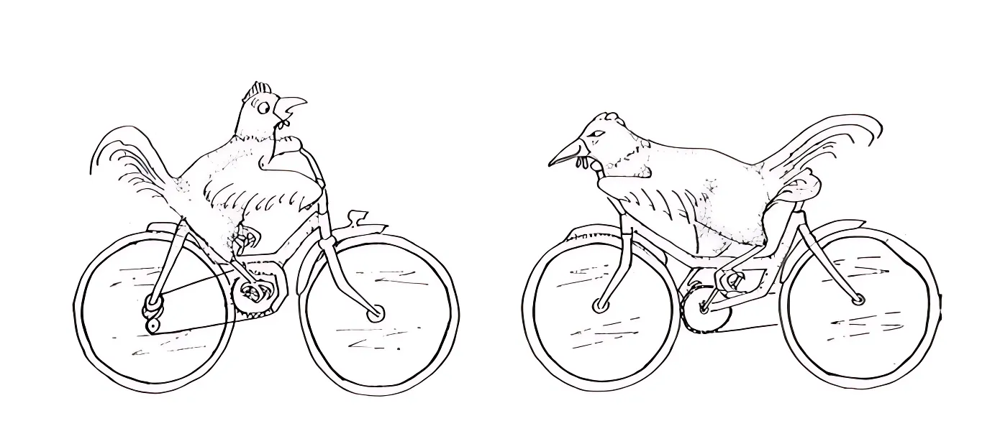
Coordination games reward matching; Chicken rewards mis-matching. No dominant strategy: your best move is whatever your rival is not doing.
| Column | |||
|---|---|---|---|
| Swerve | Straight | ||
| Row | Swerve | 0, 0 | −1, 1NE |
| Straight | 1, −1NE | −2, −2 | |
Payoffs = bragging rights: +1 win, −1 “chicken”, −2 crash.
Row first · Column second · pink = the crash
Two equilibria, both off-diagonal. Theory can’t say which; nerve and credibility decide. If both hold out, they crash (pink).
Real Chicken — SAG-AFTRA, 2024–25: video-game actors demanded AI consent; game studios held out. After 11 months the studios swerved (July 2025): 15.17% raise + AI guardrails.
| Prisoner’s Dilemma | Game of Chicken | |
|---|---|---|
| Core mechanic | Temptation to betray | Test of endurance |
| Dominant strategy? | Yes — always defect | No — depends on the opponent |
| Winning tactic | Follow the math | Weaponize credibility |
| Worst-case scenario | Sub-optimal stability | Catastrophic mutual destruction |
| Real-world example | The Cola Wars (Coke vs. Pepsi) | SAG-AFTRA strike |
Same surface — two players, two choices — but opposite engines. A Prisoner’s Dilemma is solved by changing the payoffs; a game of Chicken is solved by changing what your rival believes.
A car meets a wave of students at the crosswalk. Both can’t go at once — and if they do, disaster. Each side would rather the other wait. It’s a coordination game with no referee — played thousands of times a day.
Students and Cars each choose Pass or Yield.
Both Pass → crash (−100, −100). Both Yield → standstill (−3, −3).
Two Nash equilibria on the off-diagonal: one passes, one yields. Both are Pareto efficient.
| Cars | |||
|---|---|---|---|
| Pass | Yield | ||
| Students | Pass | −100, −100 | 1, −2NE |
| Yield | −1, 5NE | −3, −3 | |
Payoffs = how good the outcome is for each (−100 = a crash).
Students payoff first · Cars second
The two are not equal. Cars pass \((-1, 5)\): more total value, cost on pedestrians. Students pass \((1, -2)\): safer for pedestrians, less in total. Pareto can’t choose: it is a question of fairness.
Nobody at that crossing solved a game. They read a convention — and it resolved in about two seconds, for free. That is what the next slide is about.
Several stable, efficient equilibria: theory goes quiet. Something outside the game must pick one and make it common knowledge.
Law. Right of way at a crosswalk.
Convention. Which side of the road you drive on.
Norm. Queueing; who speaks next on a call.
Standard. USB-C, time zones, the width of a rail.
Why they are cheap. If everyone else drives on the right, driving on the right is your best reply. The rule only has to be known, not enforced — unlike a cartel (§14.5), which fights every member’s incentive.
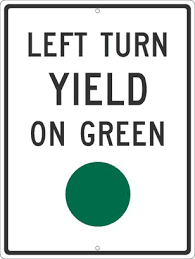
A tiny institution: common knowledge of who goes first.
The law picked the pedestrian equilibrium — fairer and safer, not the larger total. Selecting an equilibrium decides who bears the cost.
When no cell has two checks
When no pure profile is stable — randomize, and make your rival indifferent
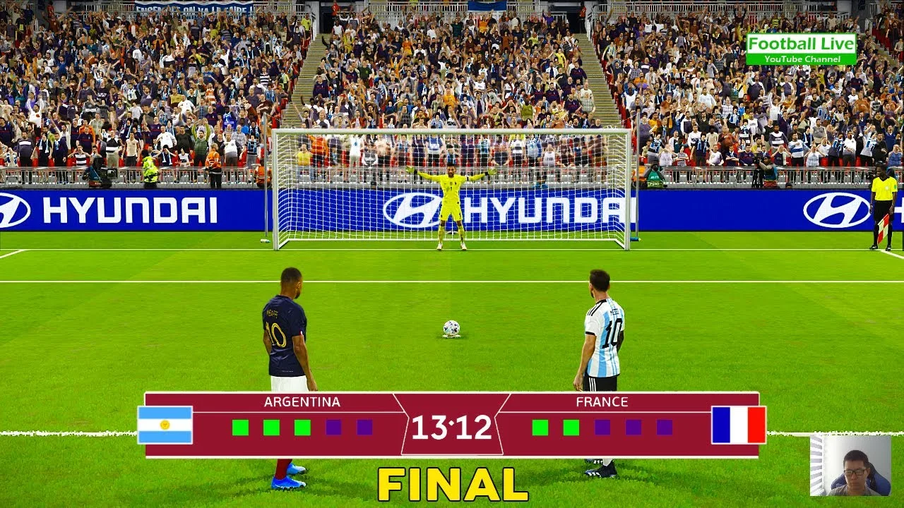
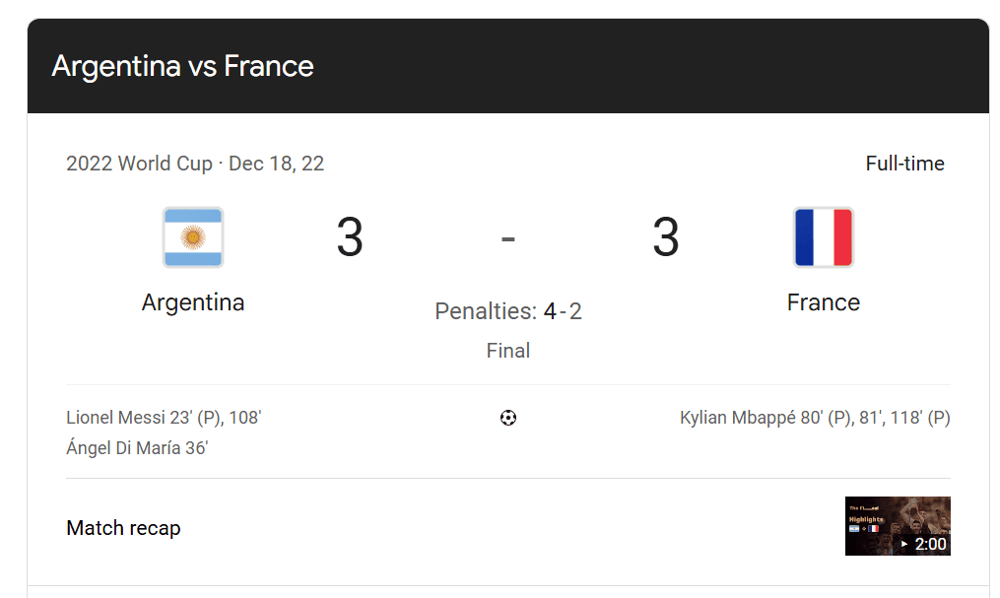
A penalty shootout is a mixed-strategy game: the kicker can’t commit to one side (the goalie would learn it), and the goalie can’t either. Each must keep the other guessing.
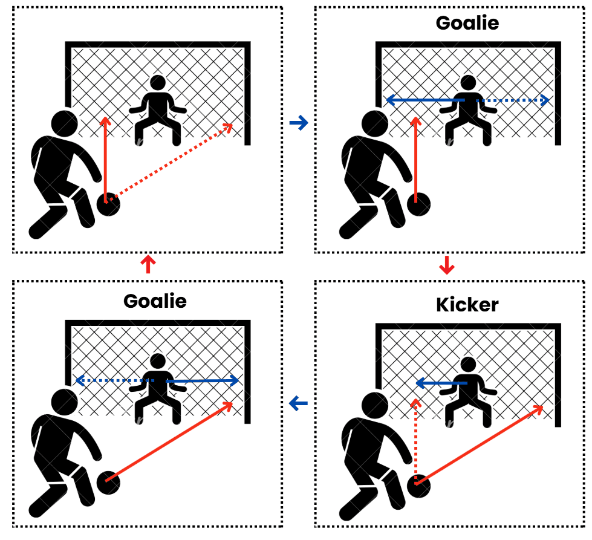
Kicker picks a side; goalie picks a side. Same side → saved. Different → goal.
| Goalie: Left | Goalie: Right | |
|---|---|---|
| Kicker: Left | 0, 1 ✓ | ✓ 1, 0 |
| Kicker: Right | ✓ 1, 0 | 0, 1 ✓ |
Payoffs: 1 = you win the kick (goal for the kicker, save for the goalie), 0 = you lose it.
Cell \(=\) (kicker, goalie) · ✓ marks that player’s best response
Tick test. A pure-strategy equilibrium is a cell with two ticks: both players best-responding.
There isn’t one. Every cell has one tick; someone always wants to move. No pure-strategy Nash equilibrium.
So enlarge the strategy set. A mixed strategy is a probability distribution over pure strategies: you choose the odds, not the action. Nash: an equilibrium then always exists.
Neither player can commit to a side — the rival would exploit it. Each settles two things at once:
BELIEFWhat will they do?
A probability: the goalie dives Left with chance \(q\).
CHOICEWhat should I do?
A number, not a side: kick Left with chance \(p\).
The knot. Best \(p\) depends on the belief about \(q\); best \(q\) on the belief about \(p\). Both choose at once.
Kicker
chooses \(p\)
Goalie
chooses \(q\)
needs a belief about \(q\)
needs a belief about \(p\)
Each needs the other’s number before choosing their own.
Equilibrium is a pair \((p^{\ast}, q^{\ast})\) where neither wants to shift weight — so each mix leaves the other player indifferent. You randomize so the rival can’t exploit you.
PAYOFF MATRIX — (kicker, goalie)
| Goalie: L | Goalie: R | |
|---|---|---|
| Kicker: L | 0, 1 | 1, 0 |
| Kicker: R | 1, 0 | 0, 1 |
The goalie earns 1 for a save, 0 otherwise. Her expected payoff is a weighted average over the kicker’s mix (Left with prob \(p\)):
\(E[\text{dive Left}] = p(1) + (1-p)(0) = p\)
\(E[\text{dive Right}] = p(0) + (1-p)(1) = 1-p\)
Kicker: 80% Left
Dive Left: 0.8(1)+0.2(0) = 0.80
Dive Right: 0.8(0)+0.2(1) = 0.20
Best response: dive LEFT.
Kicker should switch to Right
Kicker: 20% Left
Dive Left: 0.2(1)+0.8(0) = 0.20
Dive Right: 0.2(0)+0.8(1) = 0.80
Best response: dive RIGHT.
Kicker should switch to Left
Kicker: 50% Left
Dive Left: 0.5(1)+0.5(0) = 0.50
Dive Right: 0.5(0)+0.5(1) = 0.50
Goalie indifferent.
Nash equilibrium
Only at 50/50 is the goalie indifferent, so the kicker can’t be exploited: the mixed-strategy Nash equilibrium. (Asymmetric payoffs move the mix off 50/50.)
Theory and Data 14.1 — Chiappori-Levitt-Groseclose (2002, AER)
A penalty kick is matching pennies: same corner favors the goalie. Mixed-NE prediction: equal scoring rates on each side (else shift weight).
French + Italian top divisions, 1995–2000: Left vs Right scoring 76% vs 76% — the indifference condition. Replicated in tennis serves (Walker-Wooders 2001) and Spanish soccer (Palacios-Huerta 2003).
Heads Up 14.2 — a pure NE may not exist, but a mixed one always does
Nash (1950): every finite game has at least one Nash equilibrium, possibly mixed. No pure NE? Look for a mixed one.
Counterpoint. Kovash-Levitt (2009): MLB pitchers and NFL play-callers deviate from minimax — too many fastballs, too few passes. Mixing holds in simple games, less in complex ones.
The same game, again and again
When the game never ends, cooperation can survive — firms compete again and again, and engineer ways to escape the trap.
One-shot game: played once. Two gas stations set price a single time → dominant strategies force (Low, Low).
Repeated game: the same players interact over and over, so strategies can depend on past behavior.
Impalas groom ticks off each other: costly today, repaid because they meet again tomorrow.
That gives each player two tools a one-shot game lacks:
Carrot — reward
Hold your price up today, I hold mine up tomorrow.
Stick — punish
Undercut me and I retaliate: a price war.
Repetition changes no payoff in the matrix; it adds a carrot and a stick. Whether they hold the truce depends on how much players value tomorrow: the discount factor \(\delta\).
TSMC & Apple — mutual lock-in
Apple can’t build its chips; TSMC’s $15–20B fabs can’t be repurposed. TSMC’s no-compete pledge is a credible commitment. Each product cycle is another round.
Uber & Lyft — tacit duopoly
Near-identical prices and surge patterns. A cut is matched within hours, so a price war is pointless.
Coke & Pepsi — taking turns
Discounting in alternate weeks, each gets the switchers to itself. Lal (1990): a subgame-perfect equilibrium of the infinitely repeated game.
Gasmi, Laffont & Vuong (1992), 1968–86 data: tacit collusion in advertising, not price.
Reputation as a commitment device. A firm known for keeping its word has more to lose by defecting, so partners trust it.
Repeated game: the same players play the same stage game again and again, and each knows the whole history.
Finitely repeated
A known final round.
A supplier contract with 12 months left; a closing-down sale.
The stick loses its bite in the last round, then, by backward induction, in every round before.
Infinitely repeated
No final round, or nobody knows which one it is.
Two gas stations on one corner; Coke and Pepsi; OPEC+.
No last round to reason back from, so the threat of punishment stays alive.
What matters is not “forever” but whether there is a known last round. That decides whether cooperation can survive.
A known, fixed number of rounds, say two. Solve by backward induction from the last round.
The four payoffs. A prisoner’s dilemma exactly when \(T > R > P > S\):
| Coop | Defect | |
|---|---|---|
| Coop | 3, 3 | 0, 5 |
| Defect | 5, 0 | 1, 1 |
Payoffs per round: weekly profit, $ millions, the Walkthrough 14.1 numbers.
Round 2 (last): no future punishment. Defect dominates: \(T > R\), \(P > S\) → \((1,1)\).
Round 1: Round 2 is \((D,D)\) regardless, so cooperating buys nothing → (Defect, Defect) = \((1,1)\).
Defect in both rounds: total \((2,2)\), not the \((6,6)\) of cooperating twice.
The lame-duck or endgame effect: once the last round is visible, cooperation thins out.
Lame-duck official
No re-election ahead; promises get cheap.
Last week of term
Group mates you will never see again.
Final quarter before retirement
Reputation stops paying.
Closing-down sale
No shop left to honor the warranty.
A known last round poisons every round before it. To save cooperation, remove the known endpoint. →
Backward induction starts at the end. No end, nowhere to start.
“Infinite” has two readings, same math:
1. Play forever, weighting each future period a little less.
2. Each round the game continues with some probability; it ends on no known date.
New method: propose a strategy and test it. If no player gains by deviating, it is a Nash equilibrium.
| Coop | Defect | |
|---|---|---|
| Coop | 3, 3 | 0, 5 |
| Defect | 5, 0 | 1, 1 |
Payoffs per round: weekly profit, $ millions, the Walkthrough 14.1 numbers.
Same stage game, played round after round.
Coop = hold the truce; Defect = advertise / cut price.
We need two things: what a future payoff is worth today, and which strategy to test.
Future payoffs are worth less today. Discount each period ahead by a factor \(\delta\), with \(0 < \delta < 1\):
\(\$1\text{ next period} \;=\; \$\delta\text{ today}\)
\(\delta\) does two jobs. With survival probability \(p\) each round and interest rate \(r\): \(\delta = \dfrac{p}{1+r}\). It measures patience and survival together.
\(\delta\) high (e.g. 0.8) — patient
A future dollar is worth ~80¢ now → punishment stings → cooperation easier.
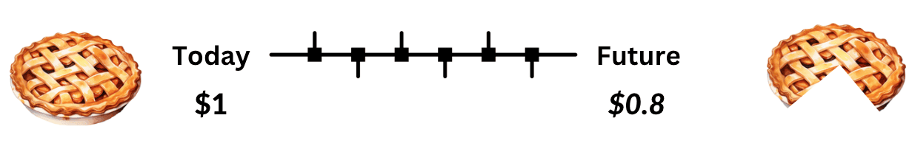
\(\delta\) low (e.g. 0.2) — impatient
A future dollar is worth ~20¢ now → grab the defection payoff now.
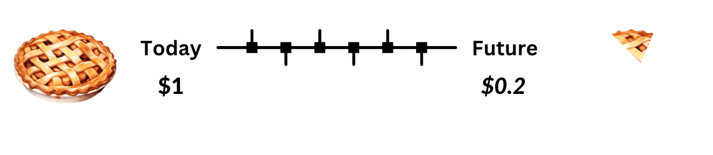
The higher \(\delta\), the more a forever-punishment outweighs a one-time gain.
Grim trigger: cooperate every period, but if the rival ever defects, defect forever after.
No second chances; that is what makes the threat worth fearing.
If your rival plays it, you have two options:
Hold the truce
3 every period.
Break it once
5 today, then 1 every period after.
| Coop | Defect | |
|---|---|---|
| Coop | 3, 3 | 0, 5 |
| Defect | 5, 0 | 1, 1 |
Payoffs per round: weekly profit, $ millions, the Walkthrough 14.1 numbers.
The trade:
Cheating gains \(5-3=2\), once.
It costs \(3-1=2\), every period after.
The question: do those future 2s, discounted back to today, add up to more than 2? That depends on \(\delta\).
Compare Row’s two options as discounted streams (against a rival playing grim trigger):
Cooperate forever
\(3 + 3\delta + 3\delta^2 + 3\delta^3 + \cdots\)
A steady 3 every period, discounted.
Defect now, then punished
\(5 + 1\delta + 1\delta^2 + 1\delta^3 + \cdots\)
Grab 5 today — then both stuck at 1 forever.
Grim trigger is a Nash equilibrium exactly when cooperating beats defecting — when the discounted punishment outweighs the one-shot temptation. Set up the inequality next.
Refresher: the geometric series
An infinite sum can be finite. For \(0 \le x < 1\):
\(x + x^2 + x^3 + \cdots \;=\; \dfrac{x}{1-x}\)
Why: call the sum \(S\). Then \(xS = x^2 + x^3 + \cdots\), so \(S - xS = x\), giving \(S = \dfrac{x}{1-x}\).
Try \(x = \tfrac12\): \(\tfrac12 + \tfrac14 + \tfrac18 + \cdots = \dfrac{0.5}{0.5} = 1\).
Remember that 1.
Cooperation holds when the truce stream beats the cheat stream:
\(3 + 3\delta + 3\delta^2 + \cdots \;>\; 5 + \delta + \delta^2 + \cdots\)
\(2\,(\delta + \delta^2 + \delta^3 + \cdots) \;>\; 2\)
Subtract \(3 + \delta + \delta^2 + \cdots\) from both sides: gain 2 today, lose 2 every later period.
\(\dfrac{\delta}{1-\delta} \;>\; 1\)
Divide by 2; use the refresher.
\(\delta \;>\; \tfrac{1}{2}\)
Cross-multiply: \(\delta > 1-\delta\). (At \(\delta = \tfrac12\) the sum is exactly 1.)
If a dollar next period is worth at least 50¢ today, the truce holds. General rule: \(\delta \ge \dfrac{T-R}{T-P} = \dfrac{5-3}{5-1} = \tfrac12\) — gain from cheating over how far you fall.
Folk theorem: in an infinitely repeated game, patient enough players can sustain cooperation as an equilibrium.
Why truces break in recessions. Survival \(p\) falls and \(r\) rises, so \(\delta = p/(1+r)\) drops below the threshold. Cooperation stops being an equilibrium.
Polygon = all feasible payoff pairs. Shaded = beats each player’s punishment payoff (individually rational). As \(\delta \to 1\), every shaded point is sustainable as a subgame-perfect equilibrium.
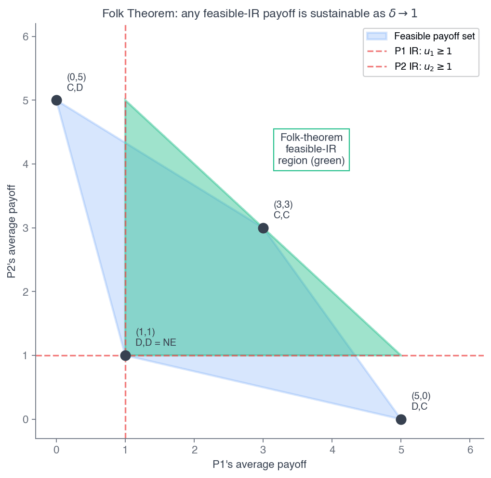
Figure 14.7 — feasible and individually-rational payoffs.
We proved one point: \(\delta > \tfrac{1}{2}\) sustains cooperation. The folk theorem predicts a region, not a point: cooperation can hold, never that it will. What picks the outcome is §14.6.
The largest working repeated-game cartel. Two features keep it alive:
Monitoring. The Joint Ministerial Monitoring Committee tracks compliance; overproducers must make deeper later cuts — a multi-period punishment.
Flexibility. Quotas revised at quarterly meetings, so demand shocks don’t break the deal.
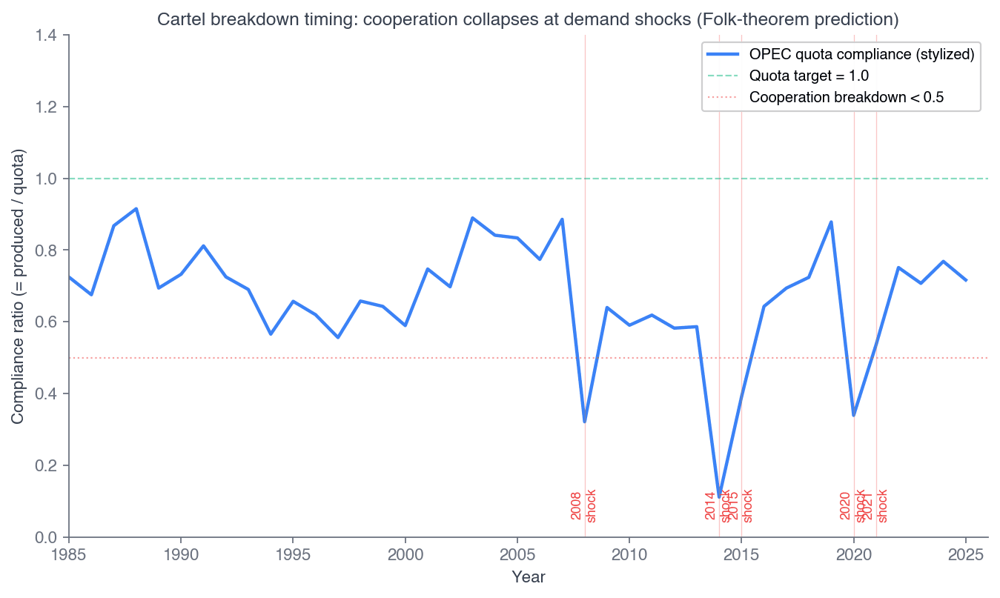
Cooperation collapses at demand shocks (2008, 2014–15, 2020), then re-forms.
A demand shock raises the temptation \(T-R\), pushing \(\delta^{\ast}\) above what members have. Cooperation stops being an equilibrium until the shock passes.
Tacit collusion: cartel prices with no explicit agreement, through signalling or the expectation that rivals will match. No meeting, no criminal exposure, but also no way to discuss cheating.
Two classics, each pulling a lever from the threshold condition:
temptation ↓Most-favored-customer clause
Best price promised to every customer. Cutting for one buyer means cutting for all, so \(T-R\) shrinks.
monitoringPrice-match guarantee
“Find it cheaper and we’ll match it.” Customers report every rival cut; retaliation is automatic.
Both look pro-consumer. Both make collusion easier. Antitrust calls them facilitating practices; the FTC challenged MFC clauses in Ethyl Corp. v. FTC (1984).
| P=$200 | P=$100 | ||
| P=$200 | $30K / $30K | $10K / $40K | |
| P=$100 | $40K / $10K | $20K / $20KNE | |
(Target / Best Buy), thousands per week. Red = Target’s best reply, gold = Best Buy’s.
A prisoner’s dilemma. Undercutting is dominant: NE ($100, $100) = $20K each, below the $30K each at $200.
Add a price-match guarantee. The Nash equilibrium does not move: $100 is still each firm’s best reply.
The store can post $200 and lose nobody. Bargain-hunters get matched to $100; everyone else pays $200.
Post high, match low, lose no one. The guarantee is a device for price discrimination that also removes the rival’s reason to cut.
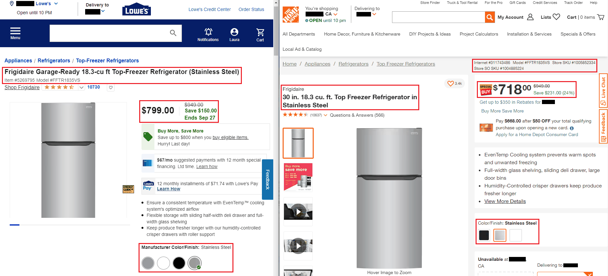
The same fridge (Frigidaire FFTR1835VS): $799 at Lowe’s, $718 at Home Depot, $81 apart.
Repeated games in practice
How firms try to hold a cartel together — and why it still cracks
Archer Daniels Midland (USA), Ajinomoto (Japan), Kyowa Hakko Kogyo (Japan), and Sewon (South Korea) held secret meetings to fix the price of lysine, a feed additive, in the 1990s.
• Regular meetings set prices, split the market and settled disputes before they became price wars.
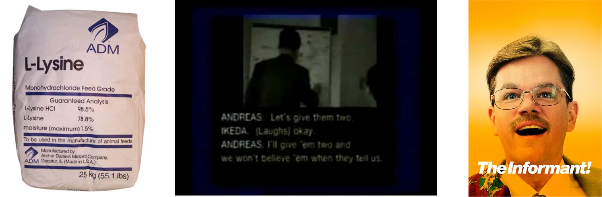
FBI informant Mark Whitacre (ADM) taped the meetings and brought the cartel down. Under the Sherman Act, a price-fixing agreement is illegal.
Each factor pulls one of three levers in \(\delta \ge \dfrac{T-R}{T-P}\): value the future more, make cheating pay less, or make cheating easy to spot.
monitoringtemptation ↓Few members
Easy to tell who cheated; each member’s share \(R\) is larger. \(\delta^{\ast}\) rises with the number of firms.
δ ↑High barriers to entry
Entrants would compete the price away. Barriers keep the future worth having.
monitoringSimilar cost structures
Same ideal price, so members agree what “cooperate” means.
δ ↑Legal protection
Prosecution ends the game. Sovereign cover raises \(p\), so \(\delta = p/(1+r)\) rises.
temptation ↑monitoringUndifferentiated product
Only price to compete on. Cheating is tempting, and unmistakable.
the catchThe incentive never leaves
Exceeding quota always gains \(T-R\) today. Levers only make it not worth it.
An undifferentiated product cuts both ways: more temptation, easier monitoring. No lever removes the incentive to cheat, which is why ADM and OPEC both cracked anyway.
Algorithmic collusion: pricing algorithms sustain above-competitive prices with no human agreement. Constant repetition, instant detection, automatic retaliation.
Hub & spoke. One vendor (hub) sells the same pricing tool to rivals (spokes); no rival talks to another. RealPage: DOJ suit over alleged rent coordination across landlords.
The legal void. The Sherman Act needs a “meeting of the minds.” A robot cartel leaves no emails, no meetings, no informant.
Lysine needed secret meetings. This needs none. Should the law test communication or the outcome?
Theory and Data 14.2 — Calvano et al. (2020, AER)
Q-learning pricing agents, with no instruction to collude and no communication, learn supracompetitive prices with punishment phases.
Two 2024 actions — do NOT conflate
DOJ + 8 states v. RealPage (Aug 2024): Sherman §1 price coordination via a hub. FTC 6(b) inquiry (Jul 2024): a study of surveillance pricing, not enforcement.
Heads Up 14.4 — the folk theorem
Friedman 1971; Fudenberg–Maskin 1986: for \(\delta\) near \(1\), any individually rational payoff is an SPNE. It doesn’t say which gets played; Q-learning is one selection mechanism.
When the game repeats forever
Robert Axelrod’s famous tournament: what strategy actually wins a repeated prisoner’s dilemma?
The folk theorem says cooperation can hold, not which strategy does well. Robert Axelrod ran a competition to find out.
Entrants submit a program: history in, C or D out.
Every program plays every other and totals its points.
No known last round. Tournament 2 ended with probability \(0.00346\) each round; median game 200 rounds.
Highest total score wins, not most pairings won.
Run twice: 14 entries, then 62 who knew the first result. The same strategy won both.
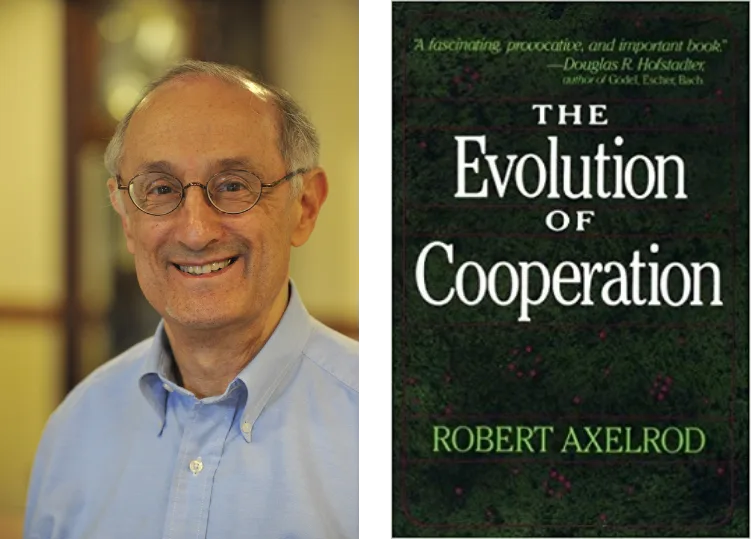
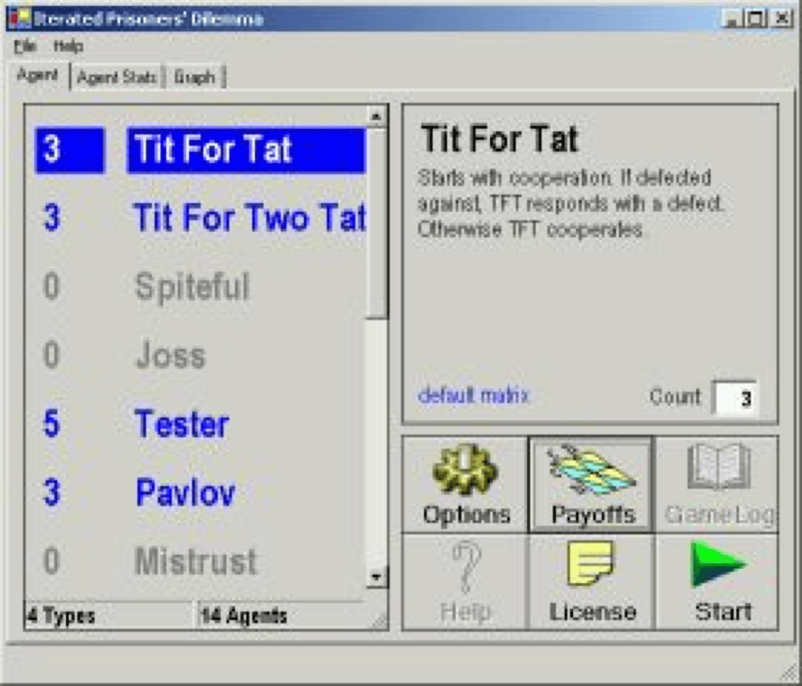
Some of the entries, as the tournament software listed them.
• By Anatol Rapoport (Toronto), the shortest entry. Won round 1 (average score 504) and the rematch against 62 rivals.
• The rule:
– Cooperate on the first round.
– On round t > 1, copy the opponent’s round t − 1 move.
| 1 | 2 | 3 | 4 | 5 | 6 | 7 | 8 | 9 | Score | |
|---|---|---|---|---|---|---|---|---|---|---|
| Tit for Tat | C (3) | C (0) | D (5) | C (3) | C (3) | C (3) | C (0) | D (5) | C (3) | 25 |
| Other | C (3) | D (5) | C (0) | C (3) | C (3) | C (3) | D (5) | C (0) | C (3) | 25 |
It mirrors: answers a defect once (red), then forgives.
Nobody won. \(25\) each. Never defecting first, Tit for Tat can only tie or fall behind. It won no pairing, yet won both tournaments.
Unbroken cooperation: \(3\times 9 = 27\) each. The top eight strategies were all “nice”.
• Tit for Tat, plus occasional defection: 10% of the time it defects even after the opponent cooperated.
• One defect starts an echo of mutual punishment. Its tournament score was terrible.
| 1 | 2 | 3 | 4 | 5 | 6 | 7 | 8 | 9 | 10 | Score | |
|---|---|---|---|---|---|---|---|---|---|---|---|
| Joss | C (3) | C (3) | D (5) | C (0) | D (5) | C (0) | D (5) | C (0) | D (5) | C (0) | 26 |
| Tit for Tat | C (3) | C (3) | C (0) | D (5) | C (0) | D (5) | C (0) | D (5) | C (0) | D (5) | 26 |
Round 3 = the 10% random defection → an endless echo.
Sneaking bought nothing. \(26\) each, a tie. Ten rounds of cooperation pay \(3 \times 10 = \mathbf{30}\): Joss burned 4 points off each score. Against reciprocators, cheating only destroys surplus.
The top strategies shared four properties:
Be nice. Start cooperative — never defect first.
Don’t be a pushover. Retaliate — answer a defection with a defection.
Be forgiving. Return to cooperation when they do. Grim trigger (§14.5) fails here: one slip ends the truce forever, and it scored near the bottom of the nice rules.
Don’t be too clever. Be clear enough that a rival learns you reciprocate. Joss’s and Graaskamp’s probes started feuds.
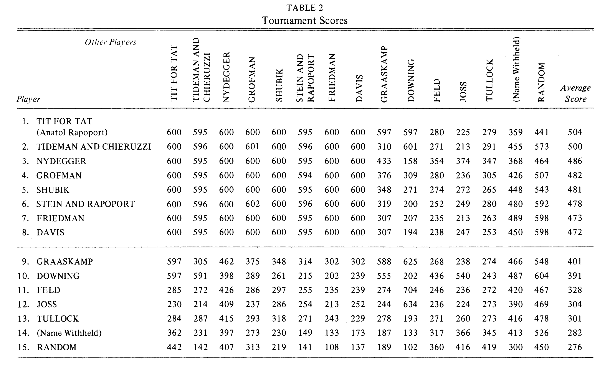
Round-robin scores. Every strategy above the line is nice; every one below defects first at some point.
How well a rule scores depends on who else is playing.
Tit for Two Tats hits back only after two defections in a row. Entered in round 1, it would have won. In round 2, where some entrants set out to exploit forgiving rules, it came 24th.
Put Tit for Tat among nothing but Always Defect and it comes last.
Axelrod’s ecological run
Each generation, a strategy’s numbers grow with its score.
Harrington, the only nasty rule in the top 15, grows while its prey last, then dies out with them.
After 1,000 generations only nice rules are left. Tit for Tat is the largest group, 14.5%.
A small cluster of Tit-for-Tat players who mostly meet each other can take over a world of defectors. Cooperation without altruism: each is only looking after itself.
Ending the arms race with a START
On 31 July 1991, President George H.W. Bush and Soviet President Mikhail Gorbachev signed the START Treaty, capping the ICBMs and nuclear warheads each country could hold. Weapons above the agreed number would be disarmed and the silos destroyed.
Not zero-sum. Both sides gain, and the gain comes from the banker, not from each other. Cuts came in steps, each one checked before the next: a repeated game, not one big bet.
Two pure Tit-for-Tat players cooperate forever… until one stray, accidental defection.
| 1 | 2 | 3 | 4 | 5 | 6 | 7 | 8 | 9 | … | |
|---|---|---|---|---|---|---|---|---|---|---|
| Tit for Tat | C | C | C | C | C | D | C | D | C | … |
| Tit for Tat | C | C | C | C | C | C | D | C | D | … |
Endless echo: the accident ricochets back and forth — they never sync back up.
| 1 | 2 | 3 | 4 | 5 | 6 | 7 | 8 | 9 | … | |
|---|---|---|---|---|---|---|---|---|---|---|
| Tit for Tat | C | C | C | C | C | D | D | D | D | … |
| Tit for Tat | C | C | C | C | C | D | D | D | D | … |
Permanent war: both retaliate forever — cooperation collapses.
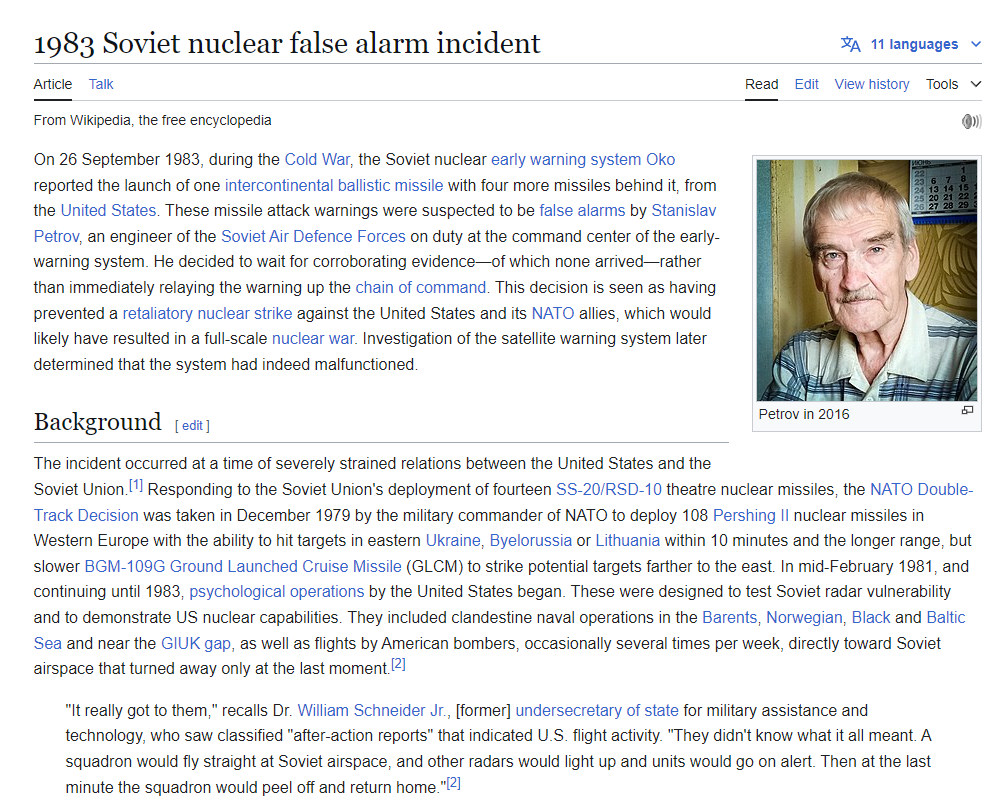
On 26 Sept 1983, a Soviet early-warning satellite reported US missiles inbound. It was sunlight on high clouds: pure noise. The duty officer, Stanislav Petrov, judged it a false alarm and did not pass it up as an attack.
Generous Tit for Tat — let about 1 defection in 10 go
| Tit for Tat | … | D | C | C | C | C | C | C | … |
| Generous TFT | … | C | C | C | C | C | C | C | … |
This time it lets the slip go, so the accident washes out and no feud starts.
Tit for Two Tats — hit back only after two defections in a row
| Tit for Tat | … | D | C | C | C | C | C | C | … |
| Tit for 2 Tats | … | C | C | C | C | C | C | C | … |
A lone defection is ignored, so a single slip never spirals.
Be nice, forgiving, but not a pushover. Durable oligopolies let small deviations go rather than start a price war.
Moves in turn
When one player moves first — credible commitment, non-credible threats, and SPNE
Player 1 puts \($0\), \($1\) or \($3\) in a box. Player 2 sees it, then matches (adds the same) or takes it all.
| P1 puts in | P2 matches | P2 takes |
|---|---|---|
| \($0\) | nothing happens — \((\$0,\ \$0)\) | |
| \($1\) | \((+\$1,\ +\$1.50)\) | \((-\$1,\ +\$1)\) |
| \($3\) | \((+\$3,\ +\$2)\) | \((-\$3,\ +\$3)\) |
Cell \(=\) (Player 1’s net, Player 2’s net). Matching grows the pot.
How this will run
1. Join below. 2. Paired: Player 1 or 2. 3. Player 1s: 60 seconds. 4. Player 2s see their partner’s box and answer.
Join the game
You are
—
Waiting for the game to start…
Your partner put in
You put into the box…
You can match it, or take it.
You walk away with
Player 1s are choosing
60
Player 1
Moves first, blind.
Player 2
Moves second, and sees the box.
That asymmetry — one of you knows what the other did — is the entire subject of this section.
What Player 1s put in
How often Player 2s matched
Every pair, and what it paid. Each Player 2 saw the real box first.
Fewer matches at \($3\) than \($1\)? Then \($3\) was a bet on trust. Backward induction: reason from the other seat first.
A sequential-move game: Player 1 chooses, then Player 2. Every game so far was simultaneous.
Timing is not the key. Player 2 observes Player 1’s choice, and Player 1 knows it.
Simultaneous = moving without seeing the other’s move, whatever the clock says.
Penalty kick: simultaneous. The goalie commits before she sees the kick.
Cash in a Box: sequential. Player 2 sees what is in the box.
A matrix cannot show who knew what. We need a tree, solved from where the game ends.
Extensive form. The tree: nodes for whose turn, branches for actions, payoffs at the leaves.
Strategy. An action at every one of your nodes, even unreached ones.
Subgame. A node plus everything below it, e.g. Player 2 holding \($3\).
Backward induction. Solve the last move first, then work back to the start.
SPNE (subgame-perfect Nash equilibrium): a Nash equilibrium in every subgame, reached or not.
It rules out claims you would not carry out:
• non-credible threat — “enter and I will destroy us both”
• non-credible promise — “give me \($3\) and I will match”
Player 1
puts in
Player 2
Player 2
\($0\)
\($1\)
\($3\)
Match
Take
Match
Take
Match
Take
Payoffs read Player 1 / Player 2 · the green path is the equilibrium.
1 — Box holds \($3\): match \(\$2\) < take \(\$3\). She takes.
2 — Box holds \($1\): match \(\$1.50\) > take \(\$1\). She matches.
3 — Player 1, looking ahead: \($0 \rightarrow \$0\); \($1 \rightarrow +\$1\); \($3 \rightarrow -\$3\). He puts in \($1\).
SPNE: Player 1 puts \($1\); Player 2 matches after \($1\), takes after \($3\). Payoffs \((+\$1, +\$1.50)\).
Both would prefer \((+\$3, +\$2)\), but Player 2’s promise to match \($3\) is not credible. Optimal at every node = subgame perfect.
Cash in a Box in real life: one side hands over money; the other decides what to do with it afterward.
Principal — the lender
Banks, VCs, shareholders. Choose how much to put in.
= our Player 1
Agent — the borrower
Founders. Then choose: build it or keep the money.
= our Player 2
Theranos. Investors put about \($700\)m in for a fingerprick blood test that never worked. Elizabeth Holmes: convicted of fraud (2022), 11 years 3 months; restitution \($452\)m.
The box everyone was investing in.
The fix: staged financing. Small checks, milestones, board seats, vesting turn one \($3\) gamble into a series of \($1\) ones.
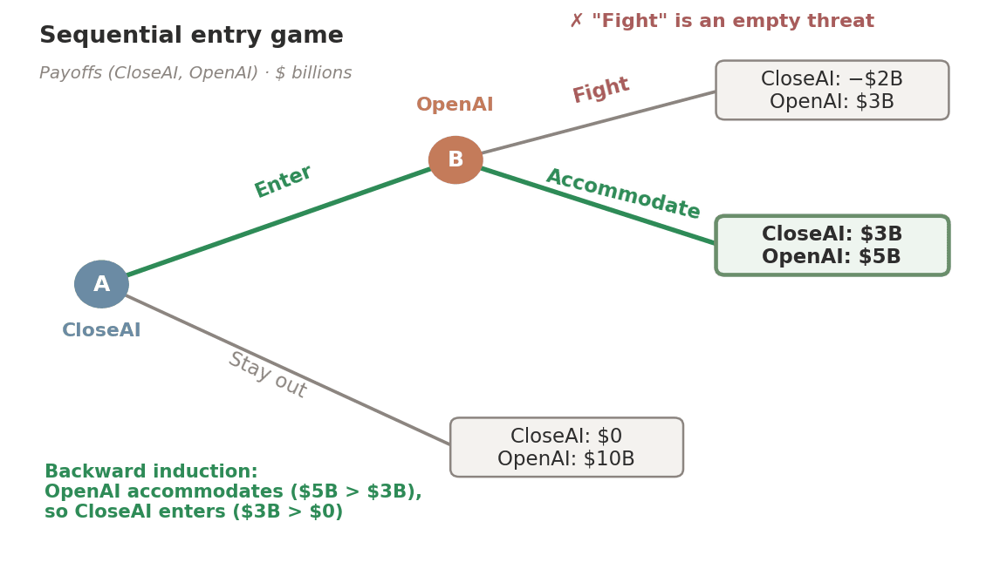
Backward induction: start at the last move and work back. CloseAI asks: “If I enter, will OpenAI really fight?”
OpenAI (B, last mover): Accommodate ($5B) > Fight ($3B) → it accommodates.
CloseAI (A, looking ahead): Enter ($3B) > Stay out ($0) → it enters.
“Fight any entrant” is not credible, so it doesn’t deter.
Making it credible (Dixit 1980): a sunk cost (capacity, R&D, exclusive contract) makes fighting the best response. SPNE flips to “invest → entrant stays out.”
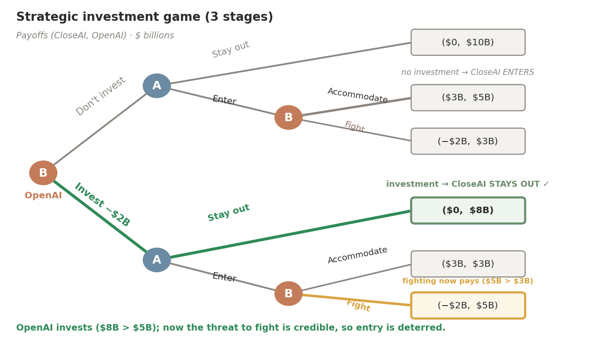
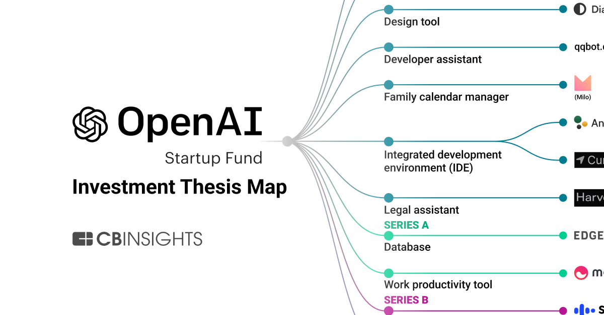
OpenAI’s Startup Fund — investing around its models to raise barriers.
First move: OpenAI invests −$2B. Now fighting pays ($5B > $3B): the threat is credible.
CloseAI looks ahead, expects a fight, and stays out. OpenAI keeps the market: $8B > $5B.
An investment never used still wins by changing what the rival believes: strategic investment / entry deterrence (Dixit, §14.4).
In Chicken, your best move depends on what your rival believes you’ll do. Change what is possible.
The binding mechanism
Visibly, irreversibly remove your ability to swerve: throw the wheel out where your rival sees it.
Why it works
A rival who sees you can’t swerve must swerve. The whole burden shifts to them.
Fewer options can make you stronger. Commitment collapses Chicken’s two equilibria to the one you want. Same logic: burning bridges, a strike fund. (Schelling, The Strategy of Conflict, 1960.)
Stackelberg: the leader commits to output first; the follower observes and responds. A large leader quantity makes the follower produce less, so the leader takes the bigger share.
NVIDIA vs. AMD. NVIDIA (~80–92% of AI accelerators) commits to volume first, backed by production deals and CUDA (leader). AMD (<10%) sizes its output around it (follower).
First-mover advantage needs a credible, irreversible commitment (capacity already built). A reversible one is ignored.
Two players, one eraser each, far apart. Alternate turns. No dodging.
Throw. Hit: you win. Miss: you lose (rival walks up and can’t miss).
Step forward. Free, but gives your rival a closer shot too.
The only decision is when to throw: a timing game.
You
Rival
distance \(d\)
Let’s play it
Two volunteers. The room calls “throw” or “step” each turn.
1
0
if you throw now
if you wait
(they miss)
throw here
too early —
waiting still wins
too late —
they throw first
far apart ——— closing in ———→ point blank
Throw now: win if you hit. Rises as you close.
Wait: win if they miss. Falls as you close.
They cross once. Before: wait. After: too late. Throw at the crossing.
In symbols: throw once \(p_1(d) \ge 1 - p_2(d-1)\).
One curve is yours, one is theirs, so both want the same instant. Moving first here is not a prize; it avoids being pre-empted.
\$26B
/yr to Apple, Samsung, Mozilla for default search
Aug 2024
Judge Mehta: Sherman §2 violation
DOJ: a Dixit-style entry barrier. Google's commitment to pay for defaults deters Bing and DuckDuckGo, who have less rent to match it.
Remedy (Sept 2025): no Chrome/Android divestiture. Behavioral fix: no exclusive default deals; share some data with rivals.
Open question: does banning the contract unwind the commitment? Watch Bing's share.
Nash (§14.1–14.2). No one gains by deviating alone. Need not be efficient (prisoner’s dilemma).
Coordination and mixing (§14.2–14.3). Many equilibria, or none in pure strategies: players randomize.
Repeated games (§14.5). Cooperation holds if \(\delta \geq \frac{T-R}{T-P}\); Target/Best Buy \(\delta^{\ast} = 1/2\).
Sequential games (§14.4). Backward induction rules out non-credible threats.
Reach (§14.6). Entry deterrence, OPEC+, algorithmic collusion, Google’s defaults.
One idea: “no player wants to deviate,” in ever richer settings.
Part IV — complete
Next: Chapter 15 — Decisions Under Uncertainty. We close strategic interaction and open Part V (Market Failures) with risk, expected utility, and insurance.
—
Game Theory Is Everywhere
Modeling Social Interactions
The same games that explain cartels run on the sidewalk outside